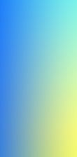
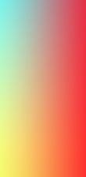
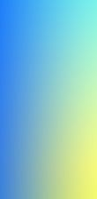
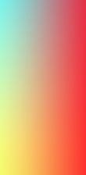
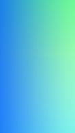
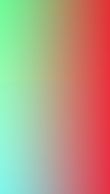
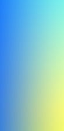
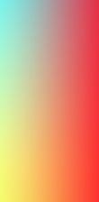

Браузер цвета задаваемые как #BruceWillis или #CANDY - распознаёт как шестнадцатиричные (для краткости hex). В hex-цветах есть 16 символов. 0 1 2 3 4 5 6 7 8 9 A B C D E F. Все некорректные и/или пропущенные символы заменяются на 0. В итоге #BruceWillis браузер преобразует в #B00CE000000, что будет тем же цветом. Далее рассмотрим на примере.
Это цвет #BruceWillis
А вот это цвет #B00CE000000, что есть то же самое, что и #B00CE00
Вот и получается, что эти цвета совпадают, так как браузер сам "исправил" наши ошибки или пропуски.


Итоговое "обработанное" изображение получилось 43,86 кБ.
От себя могу сказать, что было бы неплохо в задании указать ограничение в сжатии jpeg. Например сжатие в jpeg с качеством не ниже 80%.
"Безопасная палитра" - это палитра из 216 цветов, которые будут отображаться на любом мониторе, в любом браузере, в любой ОС такими, какими их задумал дизайнер.
Если выбрать цвет не из "безопасной палитры", то в разных браузерах, если браузер не сможет отрисовать этот цвет, то он будет отрисовывать похожий "соседний" цвет, что может сказаться на всей странице ("смещение цвета", например вместо бледно-оранжевого цвет будет более насыщенный или более бледный).
"Безопасная палитра" была наиболее актуальна раньше, когда были мониторы с малым количеством цветов (4-256), либо вообще монохромным. При использовании "безопасных цветов", на таких устройствах картинка гарантированно не сольёться в один оттенок.